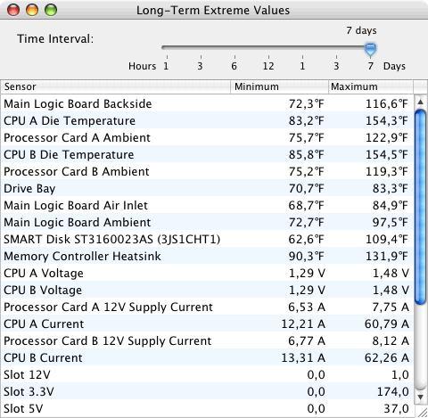
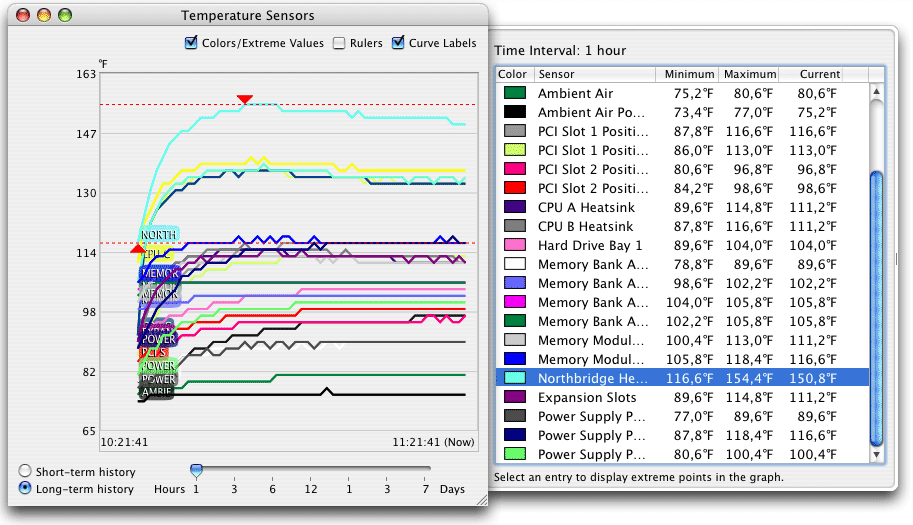

Displaying extreme values |
The application can display extreme values, i.e. minimum and maximum readouts for a selectable time frame in the past. The values are computed using the long-term history data. To display the values select the menu item Window > Show extreme values or press the key combination ⌘+6.
The time interval can be selected with the slider at the top of the window. It can be varied between one hour and one week.

You can also use a history window you have defined to display extreme values. This way you can additionally locate and visualize the extremes in the history curve. It is also possible to select the current short-term history, not only the long-term data.
Minimum and maximum values of the selected sensor will be marked by red arrows in the history curve. You can use the rulers to additionally display the time, and labels to identify particular curves. To remove the extreme markers close the drawer by unchecking Colors/Extreme Values.
